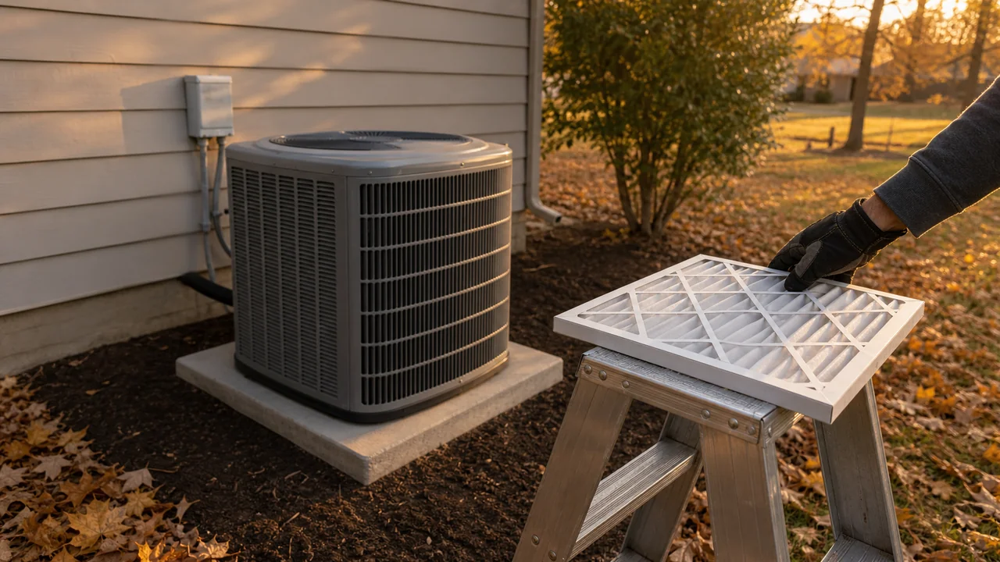

Advertising Disclosure: This site may receive compensation for service connections made through this page. Content is editorially independent.
Two scheduled tune-ups per year (spring AC, fall furnace) cost $180 to $400 and prevent the $4,000 to $8,000 in compounded repairs that hit unmaintained systems over a 15-year life. The five tasks safe for homeowners: filter changes, thermostat off when investigating, debris clearance, drain flush with vinegar, and calling a technician for everything else. A real tune-up takes 60 to 90 minutes and includes measurable readings the technician should show you. A 20-minute visit that ends with a quote for a new system is a sales call, not maintenance.
Maintenance is the only HVAC topic where the right answer is unambiguous and the wrong answer is expensive. Two scheduled tune-ups per year prevent most of the failures that drive emergency calls — and the math works in every climate, with every system age, for every household. Yet most homeowners skip it until something breaks. This playbook is the strategic view: why each task matters, what skipping it actually costs over 15 years, how to spot a real tune-up versus a 20-minute upsell visit, and where DIY ends and a technician begins.
For the tactical month-by-month checklist, see our 12-month HVAC maintenance checklist. This guide focuses on the underlying philosophy — the playbook that makes the checklist make sense.
The Real ROI: What Skipping HVAC Maintenance Costs
The honest math. A typical residential HVAC system has a 15-year design life. Two tune-ups per year cost $180 to $400 each year, totaling $2,700 to $6,000 over the system's life. That seems like a lot — until you compare it to the failure pattern of an unmaintained system.
The U.S. Department of Energy estimates that proper HVAC maintenance saves 8 to 15 percent on annual cooling and heating costs. On a $2,400 annual energy bill, that is $192 to $360 per year — enough to cover the maintenance cost itself. But the bigger savings come from prevented failures.
Three things happen when maintenance is skipped:
- Energy bills creep up 1 to 3 percent every year of neglect. By year 10, you are spending 15 to 30 percent more on cooling and heating than necessary. A clogged filter, dirty coil, or low refrigerant charge each add a few percent — they compound.
- System life shortens by 30 to 50 percent. An AC that should last 15 years fails at 9 to 11. A furnace that should last 18 years cracks its heat exchanger at 12. The replacement happens 4 to 6 years sooner — and a new system is $5,000 to $12,000 per our cost guide.
- Preventable component failures compound into one big repair. A capacitor that drifts out of spec for two years finally takes the compressor with it when it fails. A flame sensor that should have been cleaned in year 5 ends up tripping the high-limit and warping the heat exchanger by year 8. The $90 maintenance task becomes a $2,800 emergency repair.
Total honest 15-year math: $2,700-$6,000 in scheduled maintenance versus $4,000 to $8,000 in compounded repair costs PLUS $5,000 to $12,000 in early replacement. Maintenance pays back 3 to 5 times its cost on a typical residential system. The ROI is so clear that some manufacturer warranties — Carrier, Trane, Lennox, Goodman, Rheem — explicitly require documented annual professional maintenance to remain valid.
The 5 Failure Modes Maintenance Prevents
Every preventable HVAC failure traces back to one of five root causes. Maintenance is designed around these:
1. Restricted Airflow from Dirty Filters or Coils
Dirty filters and coils are the #1 preventable cause of HVAC failures. Restricted airflow forces the system to work harder, overheats components, and triggers safety lockouts. On AC systems, restricted airflow causes the evaporator coil to freeze (see why AC freezes up in summer) and stresses the compressor. On furnaces, the high-limit switch trips and the burners shut down — but the blower keeps running, so you feel cold air at the vents (see why a furnace blows cold air). Filter changes every 1 to 3 months and an annual coil rinse during the spring tune-up prevent both failure cascades.
2. Refrigerant Leaks and Charge Drift
Refrigerant is not consumed in normal operation. If the level is low, there is a leak — and a low charge causes the compressor to run hot, the coil to freeze, and the system to fail to cool below 80 degrees indoors. Annual pressure checks during the spring tune-up catch leaks early when the repair is $200 to $500. Leaks ignored for two summers can require coil replacement at $800 to $2,300. EPA Section 608 certification is legally required to handle refrigerant — never a homeowner task.
3. Capacitor and Contactor Drift
Run capacitors degrade gradually — they hold less microfarad capacitance each summer. A capacitor at 85 percent of spec is a common tune-up finding. By 70 percent, the compressor struggles to start. By 50 percent, you get the classic buzzing-but-no-spin failure (see AC compressor buzzing, fan not spinning). A capacitance meter check during the tune-up takes 30 seconds; a fresh capacitor is $90 to $450 installed. Replacement after the compressor is killed by a failed capacitor is $900 to $2,800.
4. Ignition and Combustion Drift on Furnaces
Hot-surface ignitors degrade after 5 to 10 heating seasons. Flame sensors oxidize after 2 to 4 seasons. Gas pressure can drift slightly with utility supply changes or regulator wear. A fall tune-up cleans the flame sensor, measures gas pressure with a manometer, and tests ignitor resistance. Skipping the tune-up turns these into mid-winter no-heat calls — see our furnace not working diagnostic guide for the full failure-mode breakdown.
5. Drain Line Clogs and Heat Exchanger Stress
AC condensate drain lines clog with algae every summer in humid climates. Furnace condensate traps clog with sediment. Both cause water backups, which cause secondary damage to drywall, electronics, and the heat exchanger. A spring drain flush with white vinegar and a fall trap inspection prevent the cascade. Heat exchanger cracks driven by repeated overheating from skipped maintenance turn into $600 to $4,000 repairs — and on furnaces over 12 years, often push you toward replacement.
The Year-Round Maintenance Calendar
The strategic calendar — schedule these into your phone now and they happen automatically. For the detailed task-by-task tactical version, see our 12-month HVAC maintenance checklist — this section is the high-level rhythm.
- Every 1 to 3 months (year-round): Replace the air filter. Mark the date on the new filter with a marker so you remember when it was installed.
- March or April (before AC season): Spring AC tune-up. Schedule before the first 90-degree day creates a queue. Includes condenser inspection, coil rinse, refrigerant pressure check, capacitor and contactor test, drain flush, electrical inspection, and a temperature differential measurement. See spring AC tune-up checklist for the technician-facing checklist.
- April through October (cooling season, monthly): Walk around the outdoor unit and clear any debris within 2 feet. After thunderstorms or high winds, check for blown leaves and broken branches.
- September or early October (before heating season): Fall furnace tune-up. Schedule before the first hard freeze. Includes flame sensor cleaning, gas pressure measurement, heat exchanger borescope, blower amperage test, combustion CO measurement, and electrical connection torque check. See our fall HVAC prep guide for the pre-winter checklist.
- October (start of heating season): Replace CO detector batteries. Replace detectors themselves every 5 to 7 years per EPA combustion-pollutants guidance. Confirm your CO detectors are placed within 10 feet of bedrooms.
- November (before deep cold): Walk outside and confirm furnace flue and intake pipes are clear. Snow drifts can block them and trigger pressure-switch lockouts — see our winter storm HVAC protection guide.
- Twice a year (spring and fall): Flush the condensate drain line with one cup of distilled white vinegar. Find the cleanout cap on the white PVC drain line near the indoor air handler.
That is the entire annual rhythm. Two paid technician visits, monthly homeowner attention, two seasonal walk-arounds. A homeowner spending 15 minutes a month and $300 a year on this schedule outperforms 90 percent of homeowners on system longevity, energy bills, and emergency-call rates.
Get connected with a technician in your ZIP code.
Call Now — (844) 582-1795Disclosure: We are a referral service and may receive compensation for qualified calls. Calls may be routed to an independent provider network and may be recorded. Pricing and availability vary by provider and location.
What a Real Tune-Up Looks Like — vs an Upsell Visit
Not every "tune-up" is a real tune-up. Some are 20-minute drive-bys designed to surface a new-system quote. The difference is measurable — literally. A real technician shows numbers; an upsell technician shows brochures.
A real spring AC tune-up takes 60 to 75 minutes and includes:
- Filter inspection and replacement if needed
- Outdoor condenser visual inspection — looking for bent fins, debris, corrosion, oil staining (refrigerant leak indicator)
- Coil rinse with hose water from the inside out (chemical coil cleaner if needed)
- Refrigerant pressure measurement on suction and liquid lines with manifold gauges
- Capacitor capacitance test with a meter — comparing measured microfarads against the nameplate rating
- Contactor inspection — pitted contacts get replaced
- Blower amperage test — comparing actual draw to nameplate rating
- Condensate drain flush
- Electrical connection torque check at the disconnect and air handler
- Temperature differential measurement at supply and return registers (should be 15 to 20 degrees)
A real fall furnace tune-up takes 75 to 90 minutes and adds:
- Flame sensor removal, cleaning with fine steel wool, and reinstallation
- Gas pressure measurement with a manometer (inlet and manifold)
- Heat exchanger inspection — borescope or visual through the burner compartment
- Combustion CO measurement at the supply register with a combustion analyzer
- Inducer motor amperage test
- High-limit switch test
- Pressure switch tubing inspection
If a technician is in and out in 20 minutes with nothing but a filter swap and a clipboard, ask: "What was the capacitor reading? What was the suction pressure? What was the temperature differential? What was the flame sensor microamp reading?" If they cannot answer, that was not a tune-up.
Red flags during a tune-up visit: the technician barely opens the cabinet, refuses to show measurements, immediately recommends a new system on a unit under 10 years old, quotes a five-figure repair without measurements to back it up, demands cash, or pressures you for same-day decisions. A trustworthy technician shows their work and gives you time to think.
Climate Tuning: How Maintenance Differs by Region
The same maintenance calendar adapts to your climate. A technician in Tucson tunes for different priorities than one in Syracuse or Chicago.
Hot-dry climates (Tucson, Phoenix, Las Vegas, Albuquerque): Capacitors degrade fast from extreme outdoor temperatures — annual capacitance check is non-negotiable. Outdoor coils accumulate dust quickly; chemical cleaning every 2 to 3 years. Refrigerant pressures run higher in summer; pressure checks must account for ambient temperature. Compressors run more hours per year, so their amperage trend is the leading indicator of future failure.
Cold-humid climates (Syracuse, Chicago, Buffalo, Pittsburgh): Furnaces accumulate thousands of run-hours per heating season. Heat exchanger borescope inspection during the fall tune-up matters more than anywhere else. Condensate drain lines on high-efficiency furnaces freeze in unconditioned crawl spaces — schedule a pre-winter walk-around to insulate exposed runs. CO detector replacement on a strict 5-year schedule, not 7.
Mountain / high-altitude climates (Reno, Denver, Salt Lake City): Altitude reduces gas pressure — orifice adjustment may be needed on furnaces installed by lower-cost contractors who skipped this step. Subzero overnight temperatures stress heat exchangers; pressure-switch trips are more common from thinner air. Combustion air supply matters more in tightly-sealed mountain homes.
Mixed-humid climates (Richmond, Charlotte, Nashville): Both AC and heating systems get used heavily, so both tune-ups matter equally. Spring AC tune-up because the system runs nonstop in July humidity peaks. Fall furnace tune-up because the first cold snap is when most no-heat calls cluster — flame sensors that oxidized over the long off-season fail first.
Browse local service providers in Richmond, the Nevada state hub, the New York state hub, or all service areas to find a technician familiar with your region's specific maintenance priorities.
The HVAC Maintenance Budget — What to Spend Each Year
The honest annual budget for a single-family home with one HVAC system. Pulled from our complete HVAC Cost Guide for consistency:
- Filter replacements (4 to 12 per year): $30–$200 depending on filter quality and frequency. 1-inch pleated filters $5–$15 each; 4-inch media cabinet filters $30–$60 every 6 to 12 months.
- Spring AC tune-up: $90–$200
- Fall furnace tune-up: $90–$200
- Annual service contract (bundles both visits + priority + repair discount): $200–$400
- Drain flush supplies (vinegar): $5–$10 for the year
- CO detector batteries (annual): $10–$20
- CO detector replacement (every 5 to 7 years, amortized): $5–$10 per year
- Whole-house surge protector (one-time, lasts 10+ years): $300–$600 amortized = $30–$60 per year
Estimated ranges based on publicly available industry data. Actual costs vary by region, provider, and system age.
Total realistic annual budget: $250 to $500 per year for proper maintenance on a single-family home. Multi-system homes (separate AC and heat pump, or two-zone systems) scale proportionally. For comparison, the typical preventable repair caused by skipped maintenance — capacitor takes the compressor, dirty filter cracks the heat exchanger, drain clog ruins drywall — runs $1,500 to $3,500 per incident. Maintenance pays for itself the first time it prevents one of those.
When DIY Ends and a Technician Begins
The complete safe homeowner DIY list, full stop:
- Replace the air filter. Every 1 to 3 months. The single highest-ROI maintenance step you can do yourself.
- Set the thermostat to OFF when investigating any issue. Stops the system from cycling into a fault.
- Move physical debris away from the outdoor unit. Sweep leaves, cut back bushes for 2-foot clearance, move stored items. Do not touch the unit itself.
- Flush the condensate drain line twice a year with one cup of distilled white vinegar through the cleanout cap.
- Call a qualified HVAC technician for everything else. Coil cleaning, capacitor work, refrigerant handling, electrical inspection, gas-side checks, ignitor or flame-sensor work, blower-motor service, drain pan replacement, anything inside the cabinet. Refrigerant work specifically is regulated under EPA Section 608 and certification is legally required.
That is the complete list. Anything beyond these five — including tasks that YouTube tutorials make look easy — carries enough risk of electrical injury, refrigerant exposure, gas-side error, or expensive secondary damage that the savings do not justify the risk. A technician will kill the breaker, lock out the disconnect, and verify zero voltage before opening any cabinet — and even then, capacitors store dangerous electrical charges that have to be discharged with insulated tools. Bent coil fins from a careless rinse cost more in lost efficiency than the labor saved. A misadjusted gas valve can produce CO. Stick to the five-item list and call for everything else.
Deep-Dive Guides for Specific Maintenance Topics
This playbook is the strategic overview. Each topic has its own dedicated article:
- 12-Month HVAC Maintenance Checklist — the tactical month-by-month task list that pairs with this strategic playbook
- Spring AC Tune-Up Checklist — what the technician does on the spring visit and what to ask before they leave
- Fall HVAC Prep: 9 Steps Before First Freeze — pre-winter walk-around for cold-climate homes
- 7 Warning Signs Your HVAC Is About to Fail — the early symptoms that tune-ups are designed to catch
- Winter Storm HVAC Protection — freeze prevention, flue clearance, and backup-heat planning
- Why Isn't My AC Working? Complete Troubleshooting Guide — the AC failure modes that maintenance prevents
- Furnace Not Working? Diagnostic Guide — the furnace failure modes the fall tune-up catches
- 2026 HVAC Cost Guide — the canonical pricing reference for tune-ups, repairs, and replacements
Trusted Industry Sources
The guidance in this article is consistent with published recommendations from:
- U.S. Department of Energy — Maintaining Your Air Conditioner
- EPA — Combustion Pollutants & Indoor Air Quality
- EPA Section 608 — Refrigerant Handling Regulations
- ENERGY STAR — Clean Heating & Cooling Federal Tax Credits
A technician can do this safely and check the rest of your system.
Call Now — (844) 582-1795Disclosure: We are a referral service and may receive compensation for qualified calls. Calls may be routed to an independent provider network and may be recorded. Pricing and availability vary by provider and location.
Frequently Asked Questions
Twice a year is the industry standard: a spring tune-up for the AC and a fall tune-up for the furnace. Each visit takes 60 to 90 minutes and costs $90 to $200 depending on region and provider. The ROI math is straightforward — a single prevented compressor failure ($900 to $2,800) or heat exchanger replacement ($600 to $4,000) covers a decade of tune-ups. Heat-pump systems that run year-round benefit from a third visit; older systems past 10 years often need quarterly inspections rather than twice-a-year.
Over a 15-year system life, scheduled maintenance saves a typical homeowner $4,000 to $8,000 in prevented repairs and 8 to 15 percent on energy bills. The U.S. Department of Energy estimates that a clean coil and properly-charged refrigerant alone improve efficiency by up to 15 percent versus a neglected system. The single highest-ROI maintenance step is the air filter change — a $15 filter prevents the frozen coils, overheated heat exchangers, and burned-out blower motors that drive most no-cool and no-heat calls.
Five tasks are safe for homeowners: replace the air filter every 1 to 3 months, set the thermostat to OFF when investigating any issue, move physical debris away from the outdoor unit (without touching it), flush the condensate drain line with white vinegar twice a year, and call a qualified HVAC technician for everything else. Coil cleaning, capacitor testing, refrigerant work, electrical inspection, gas-side checks, and any work inside the cabinet require a technician. Refrigerant work is regulated under EPA Section 608 and certification is legally required to handle it.
A real tune-up takes 60 to 90 minutes and includes: filter inspection, condenser coil inspection and rinse, refrigerant pressure check, capacitor capacitance test, contactor inspection, blower amperage check, condensate drain flush, electrical connection torque check, thermostat calibration, and a temperature differential measurement at the supply and return registers. For furnaces, add a flame sensor cleaning, gas pressure measurement with a manometer, heat exchanger borescope inspection, and combustion CO measurement. A 15-minute visit that just changes the filter and quotes a new system is not a tune-up — it's a sales call.
Per the canonical cost guide, individual tune-ups run $90 to $200 each (so $180 to $400 for both spring and fall visits). Annual service contracts bundle two visits plus priority scheduling and discounted repair rates for $200 to $400 per year. For a single-family home with one HVAC system, a contract saves money once you factor in the priority queue advantage during peak-season breakdowns. Multi-system homes (separate AC and heat pump) cost more proportionally.
Three predictable consequences in increasing severity. First, energy bills creep up 1 to 3 percent per year of neglect — by year 10, you're spending 15 percent more on cooling and heating than necessary. Second, system life shortens by 30 to 50 percent — an AC that should last 15 years fails at 9 to 11. Third, preventable component failures (capacitors, contactors, drain pans, ignitors, flame sensors) compound into one big repair when they should have been caught during a tune-up. The math: $200 per year in maintenance vs $4,000 to $8,000 in compounded repair and replacement costs over the same 15 years.
Read the fine print first. A good service contract includes two annual tune-ups, priority scheduling during peak season (when wait times can stretch a week), a 10 to 20 percent discount on repairs, and waived diagnostic fees. A bad contract locks you to a single provider, requires you to use them for any covered repair, and bills monthly even if you never use the visits. The strongest sign of a fair contract: it allows cancellation with a prorated refund, doesn't auto-renew without notice, and lists exactly what each visit includes. Get the included-tasks list in writing before signing.
Spring AC tune-ups are best in March or April — before the first 90-degree day creates a backlog. Fall furnace tune-ups should land in September or early October — before the first hard freeze. Avoid May, June, July, August for AC visits and December, January, February for furnace visits — those are emergency-call peak periods and you'll be deprioritized behind active no-cool and no-heat calls. Cold-climate cities like Syracuse or Chicago benefit from September scheduling because furnace techs book solid by mid-October.
A thorough tune-up takes 60 to 90 minutes per system. Spring AC visits run 60 to 75 minutes; fall furnace visits run 75 to 90 minutes because of the additional combustion safety checks. If a technician is in and out in 20 minutes, they did not perform a real tune-up — they almost certainly skipped the coil rinse, capacitor test, refrigerant pressure check, or combustion analysis. Ask before they leave: 'What was the capacitor reading? What was the temperature differential? What was the manometer reading on the gas side?' A real technician shows their numbers.
Yes — and skipping maintenance on a new system is one of the fastest ways to void the warranty. Most manufacturer warranties require documented annual professional maintenance to remain valid. If a compressor fails in year 7 and the manufacturer asks for service records you cannot produce, the warranty claim is denied and you pay full price for the repair. The warranty paperwork hidden in the new-system folder spells this out — read it within the first month of installation.
A standard 1-inch pleated filter should be replaced every 30 to 90 days. Homes with pets, smokers, or heavy allergen loads need monthly changes. Homes with 4-inch or 5-inch media cabinet filters can go 6 to 12 months between changes. The single highest-ROI maintenance step you control as a homeowner — a $15 filter prevents frozen evaporator coils ($600 to $1,200 to thaw and recharge), high-limit switch trips on the furnace, and the early death of blower motors. Hold the old filter up to a light; if you cannot see light through it, replace it.
No. The outdoor cabinet contains 240V wiring that remains live even when the breaker is off, and a proper coil cleaning often requires chemical coil cleaner and a fin inspection that can spot bent fins or corrosion that homeowners would miss. The risk-reward is poor: you save $50 to $100 in labor but risk an electrical injury, a punctured refrigerant line ($200 to $1,200 leak repair), or bent fins that reduce airflow and cause future failures. Ask for a coil rinse during the spring tune-up — it is included in most tune-up packages or runs $40 to $80 as an add-on.
A tune-up is preventive maintenance scheduled in advance — the technician inspects, cleans, and tests components on a healthy system to prevent failures. A service call is reactive — you call because something is broken and the technician diagnoses and repairs the failure. Tune-ups cost $90 to $200 and are scheduled. Service calls cost $65 to $150 just for the diagnostic fee, plus parts and labor for the actual repair, plus a $100 to $300 surcharge if the call is after-hours or weekend. The 5x cost difference is why scheduled maintenance pays for itself.
Three signals of a thorough technician. First, they spend 60 to 90 minutes on the visit — not 20. Second, they show you readings: capacitor microfarads, refrigerant suction and liquid pressures, supply-vs-return temperature differential, gas manifold pressure on furnaces, flame sensor microamps. Third, they leave a written tune-up report with measurements and any flagged items. Red flags: the technician barely opens the cabinet, refuses to show numbers, immediately recommends a new system on a unit under 10 years old, or quotes a major repair without measurements to support it. A thorough technician shows their work.
Yes — they are different systems with different failure modes, and a combined visit usually means a rushed visit on at least one side. The spring AC tune-up focuses on the outdoor condenser, refrigerant pressure, capacitor, and indoor evaporator. The fall furnace tune-up focuses on combustion safety, the heat exchanger, gas pressure, ignition components, and CO measurement. A heat pump (which both heats and cools) needs both perspectives, ideally split across spring and fall visits with extra attention to defrost cycles and reversing valve operation.
Read your warranty carefully. Most manufacturer warranties (Carrier, Trane, Lennox, Goodman, Rheem) explicitly require annual professional maintenance documented with dated invoices to remain valid. If the system fails and you cannot produce service records, the warranty claim is denied. Common voiding triggers: skipped annual maintenance, DIY work on covered components, use of non-OEM replacement parts, and lapsed registration. Within the first 60 days of a new-system install, register the warranty online with the manufacturer and start the annual service log.
Maintenance is preventive work the homeowner pays for to keep the system running. Warranty service is repair work covered by the manufacturer when a defective part fails within the warranty period. Most HVAC systems have a 5 to 10 year parts warranty (compressor often 10 years, other parts 5) and a 1-year labor warranty. After labor warranty expires, even a covered part repair costs $200 to $700 in labor. Maintenance keeps you from making warranty claims; warranty service helps when components fail despite proper maintenance.
Three filters. First, the technician should hold the appropriate state HVAC contractor credential and EPA Section 608 certification for refrigerant handling. Second, they should provide a written estimate before starting work, itemized into diagnostic, parts, and labor — and stick to it unless you approve changes. Third, they should be willing to show you the readings that justify any major repair recommendation. Avoid technicians who push immediate replacement on systems under 10 years old, refuse to show measurements, demand cash, or pressure you for same-day decisions on five-figure repairs.
Local HVAC Service Areas
Cool Call Pro connects homeowners with independent HVAC technicians nationwide. Find a pro in Reno (NV), Syracuse (NY), Chicago (IL), Richmond (VA), or Tucson (AZ), or browse by state: Nevada, New York, or all locations.